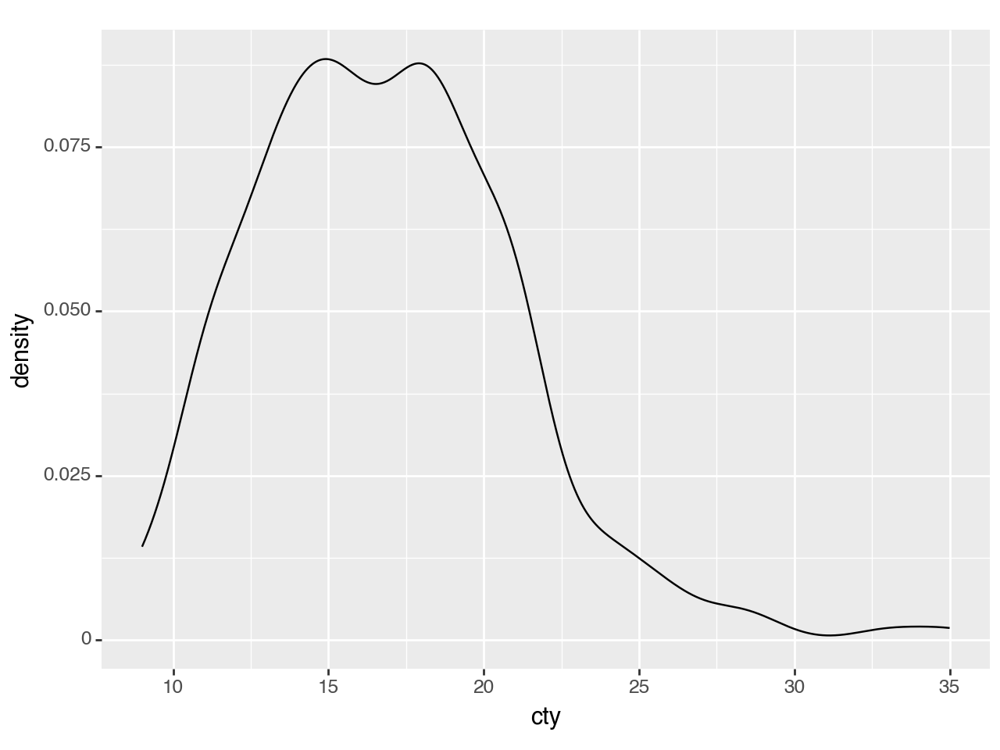
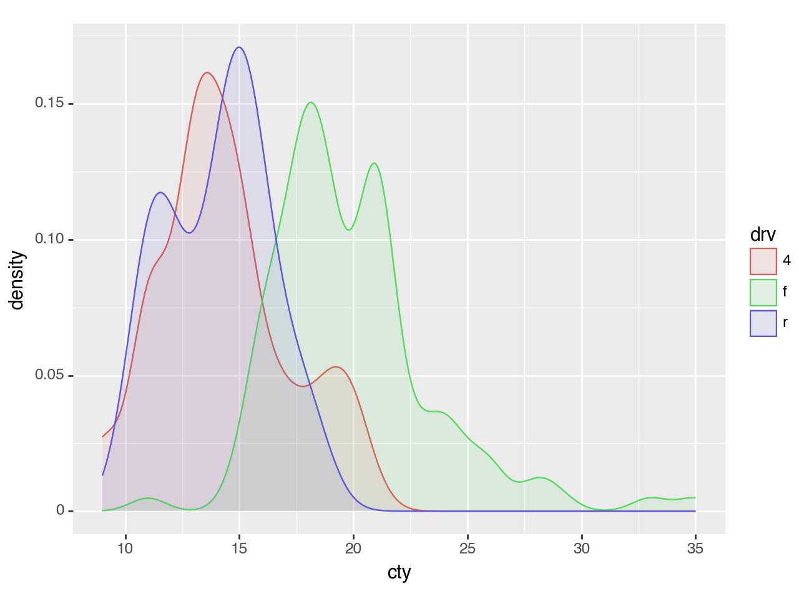
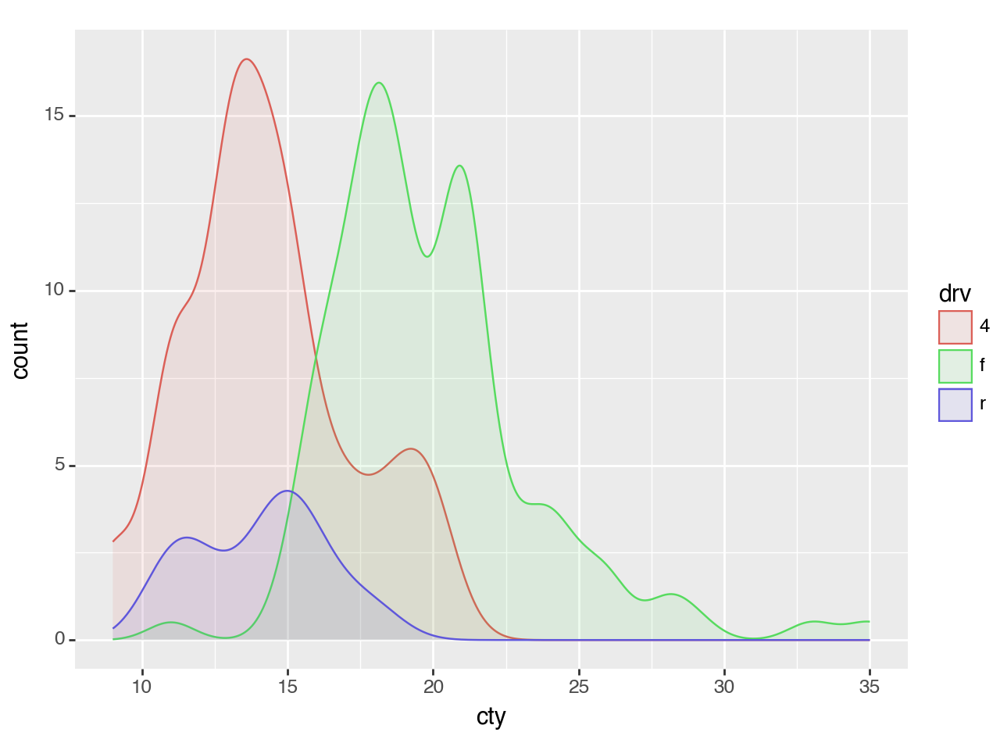
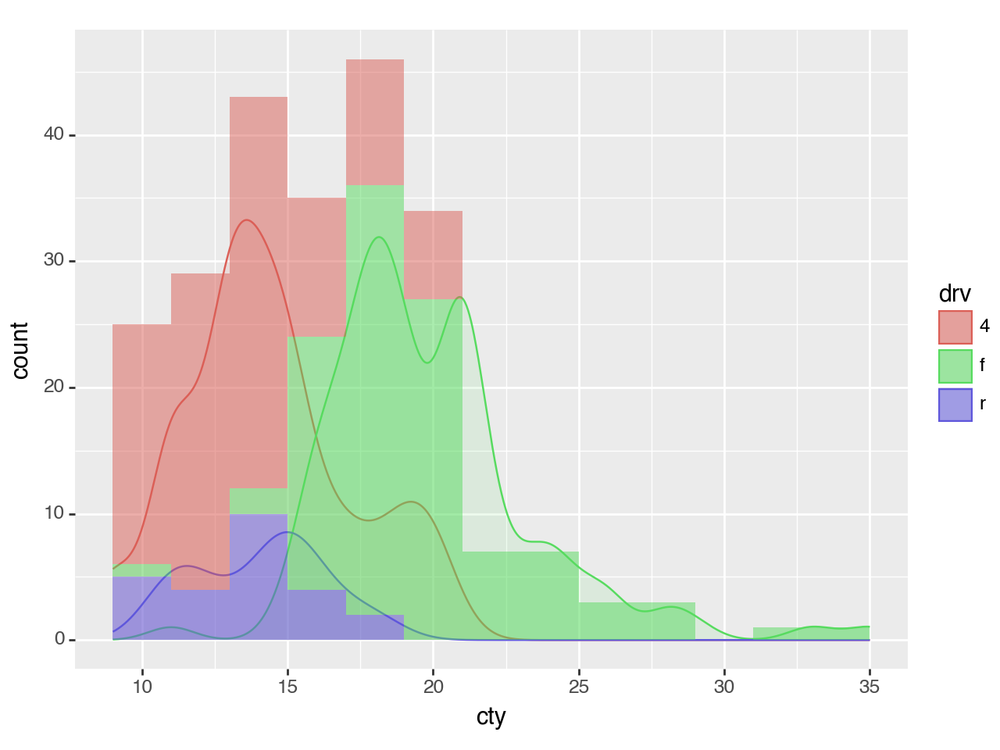
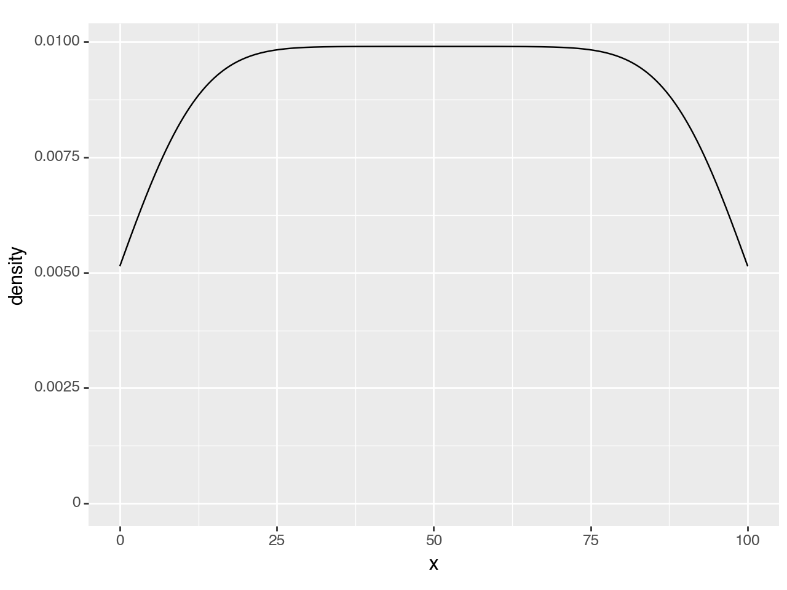
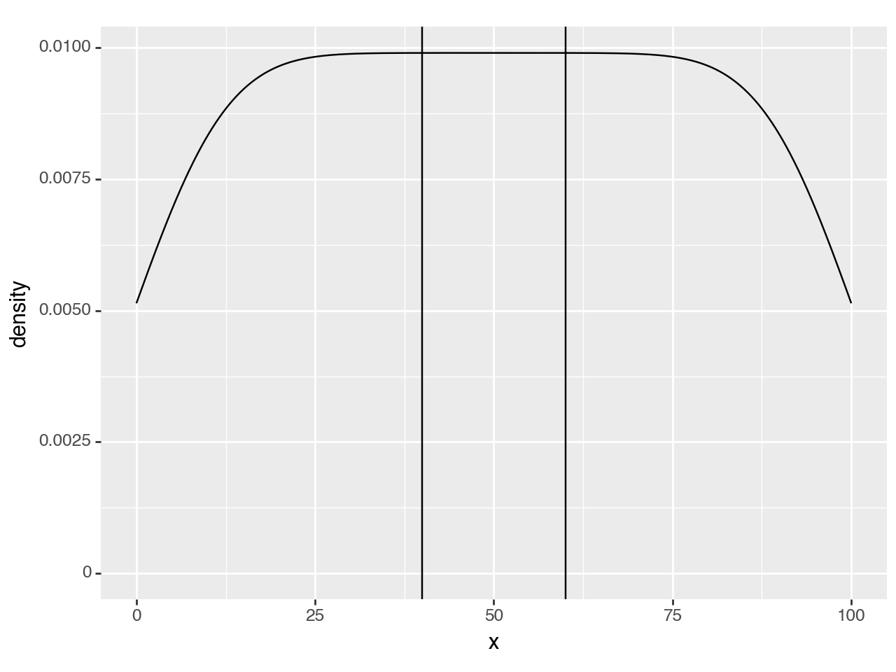
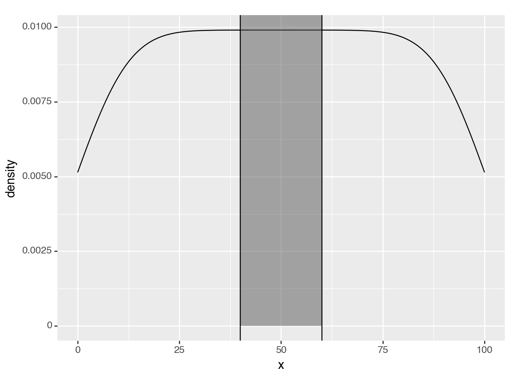
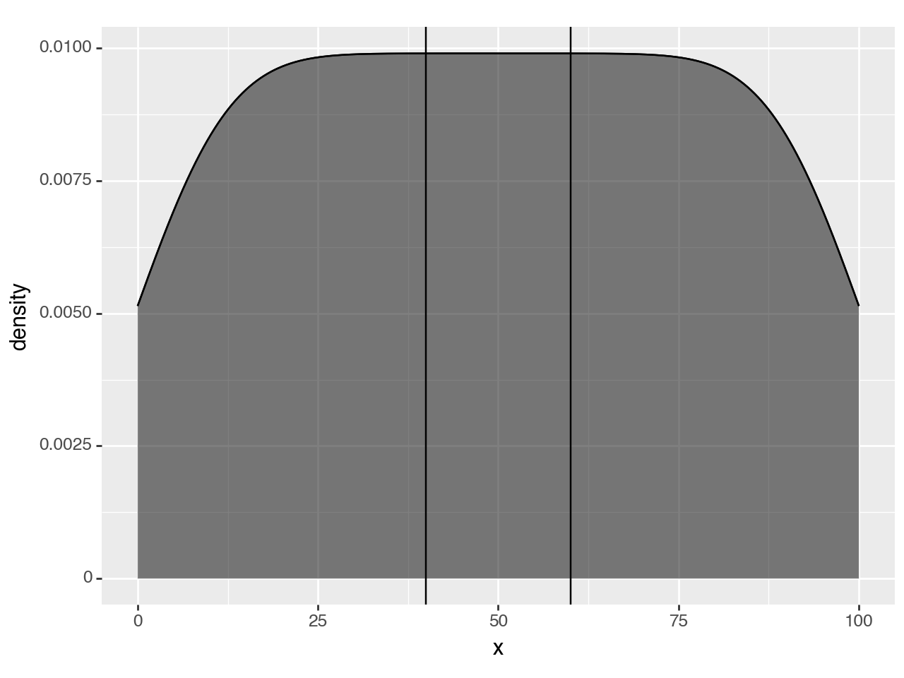
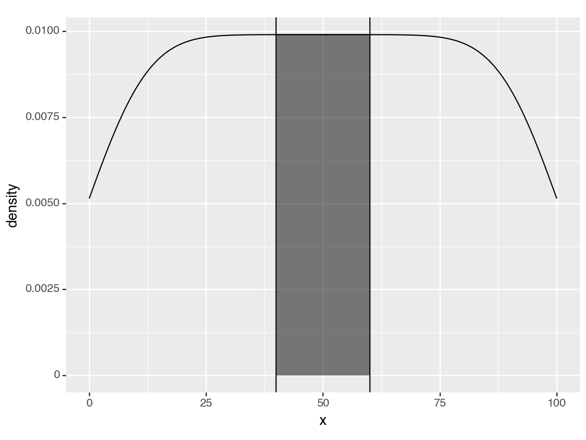
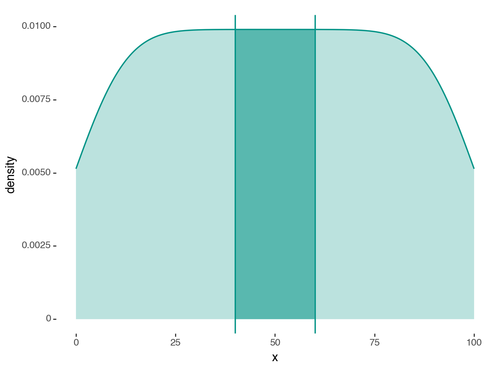

plotnine.geoms.geom_density¶
- class plotnine.geoms.geom_density(mapping: Aes | None = None, data: DataLike | None = None, **kwargs: Any)[source]¶
Smooth density estimate
Usage
geom_density(mapping=None, data=None, stat='density', position='identity', na_rm=False, inherit_aes=True, show_legend=None, raster=False, outline_type='upper', **kwargs)
Only the
dataandmappingcan be positional, the rest must be keyword arguments.**kwargscan be aesthetics (or parameters) used by thestat.- Parameters:
- mapping
aes, optional Aesthetic mappings created with
aes(). If specified andinherit.aes=True, it is combined with the default mapping for the plot. You must supply mapping if there is no plot mapping.Aesthetic
Default value
x
y
alpha
1color
'black'fill
Nonegroup
linetype
'solid'size
0.5weight
1where
TrueThe bold aesthetics are required.
Aesthetics Descriptions
- where
Define where to exclude horizontal regions from being filled. Regions between any two
Falsevalues are skipped. For sensible demarcation the value used in the where predicate expression should match theyminvalue or expression. i.e.aes(ymin=0, ymax='col1', where='col1 > 0') # good aes(ymin=0, ymax='col1', where='col1 > 10') # bad aes(ymin=col2, ymax='col1', where='col1 > col2') # good aes(ymin=col2, ymax='col1', where='col1 > col3') # bad
- data
dataframe, optional The data to be displayed in this layer. If
None, the data from from theggplot()call is used. If specified, it overrides the data from theggplot()call.- stat
stror stat, optional (default:stat_density) The statistical transformation to use on the data for this layer. If it is a string, it must be the registered and known to Plotnine.
- position
stror position, optional (default:position_identity) Position adjustment. If it is a string, it must be registered and known to Plotnine.
- na_rmbool, optional (default:
False) If
False, removes missing values with a warning. IfTruesilently removes missing values.- inherit_aesbool, optional (default:
True) If
False, overrides the default aesthetics.- show_legendbool or
dict, optional (default:None) Whether this layer should be included in the legends.
Nonethe default, includes any aesthetics that are mapped. If abool,Falsenever includes andTruealways includes. Adictcan be used to exclude specific aesthetis of the layer from showing in the legend. e.gshow_legend={'color': False}, any other aesthetic are included by default.- rasterbool, optional (default:
False) If
True, draw onto this layer a raster (bitmap) object even ifthe final image is in vector format.
- mapping
See also
Examples¶
[1]:
import pandas as pd
import numpy as np
from plotnine import (
ggplot,
aes,
after_stat,
geom_density,
geom_histogram,
geom_vline,
geom_rect,
labs,
annotate,
theme_tufte
)
from plotnine.data import mpg
Density Plot¶
[2]:
mpg.head()
[2]:
| manufacturer | model | displ | year | cyl | trans | drv | cty | hwy | fl | class | |
|---|---|---|---|---|---|---|---|---|---|---|---|
| 0 | audi | a4 | 1.8 | 1999 | 4 | auto(l5) | f | 18 | 29 | p | compact |
| 1 | audi | a4 | 1.8 | 1999 | 4 | manual(m5) | f | 21 | 29 | p | compact |
| 2 | audi | a4 | 2.0 | 2008 | 4 | manual(m6) | f | 20 | 31 | p | compact |
| 3 | audi | a4 | 2.0 | 2008 | 4 | auto(av) | f | 21 | 30 | p | compact |
| 4 | audi | a4 | 2.8 | 1999 | 6 | auto(l5) | f | 16 | 26 | p | compact |
The defaults are not exactly beautiful, but still quite clear.
[3]:
(ggplot(mpg, aes(x='cty'))
+ geom_density()
)

[3]:
<Figure Size: (640 x 480)>
Plotting multiple groups is straightforward, but as each group is plotted as an independent PDF summing to 1, the relative size of each group will be normalized.
[4]:
(ggplot(mpg, aes(x='cty', color='drv', fill='drv'))
+ geom_density(alpha=0.1)
)

[4]:
<Figure Size: (640 x 480)>
To plot multiple groups and scale them by their relative size, you can map the y aesthetic to 'count' (calculated by stat_density).
[5]:
(ggplot(mpg, aes(x='cty', color='drv', fill='drv'))
+ geom_density(aes(y=after_stat('count')), alpha=0.1)
)

[5]:
<Figure Size: (640 x 480)>
Density Plot + Histogram¶
To overlay a histogram onto the density, the y aesthetic of the density should be mapped to the 'count' scaled by the binwidth of the histograms.
Why?
The count calculated by stat_density is \(count = density * n\) where n is the number of points . The density curves have an area of 1 and have no information about the absolute frequency of the values along curve; only the relative frequencies. The count curve reveals the absolute frequencies. The scale of this count corresponds to the count calculated by the stat_bin for the histogram when the bins are 1 unit wide i.e. binwidth=1. The
count * binwidth curve matches the scale of counts for the histogram for a give binwidth.
[6]:
binwidth = 2 # The same for geom_density and geom_histogram
(ggplot(mpg, aes(x='cty', color='drv', fill='drv'))
+ geom_density(aes(y=after_stat('count*binwidth')), alpha=0.1)
+ geom_histogram(aes(fill='drv', y=after_stat('count')), binwidth=binwidth, color='none', alpha=0.5)
# It is the histogram that gives us the meaningful y axis label
# i.e. 'count' and not 'count*2'
+ labs(y='count')
)

[6]:
<Figure Size: (640 x 480)>
Shading a Region under a Density Curve¶
Extending geom_density to create an effect of a shaded region
Create some data and plot the density
[7]:
n = 101
df = pd.DataFrame({'x': np.arange(n)})
(ggplot(df, aes('x'))
+ geom_density()
)

[7]:
<Figure Size: (640 x 480)>
Suppose we want to mark a region as special e.g. (40, 60), we can use vertical lines to annotate it.
[8]:
region = (40, 60)
(ggplot(df, aes('x'))
+ geom_density()
+ annotate(geom_vline, xintercept=region) #new line
)

[8]:
<Figure Size: (640 x 480)>
To make it standout more we can highlight. To do that, the first thought is to use a rectangle.
[9]:
region = (40, 60)
(ggplot(df, aes('x'))
+ geom_density()
+ annotate(geom_rect, xmin=region[0], xmax=region[1], ymin=0, ymax=float('inf'), alpha=0.5) # new line
+ annotate(geom_vline, xintercept=region)
)

[9]:
<Figure Size: (640 x 480)>
Since y upper-bound varies along the curve, a rectangular highlight has to stretch up to the top of the panel.
To hightlight only within the density curve, we have to use a second density curve. We need to calculate the density as normal, but just before the curve & region are plotted, we should keep only the region we want.
We create our own geom_density_highlight and override the setup_data method. First, we override but do nothing, we only inspect the data to see what we have to work with.
[10]:
# new class
class geom_density_highlight(geom_density):
def setup_data(self, data):
data = super().setup_data(data)
print(data)
return data
region = (40, 60)
(ggplot(df, aes('x'))
+ geom_density()
+ geom_density_highlight(fill='black', alpha=0.5) # new line
+ annotate(geom_vline, xintercept=region)
)
PANEL count density group n scaled x y
0 1 0.519038 0.005139 -1 101 0.519039 0.000000 0.005139 \
1 1 0.522757 0.005176 -1 101 0.522758 0.097752 0.005176
2 1 0.526473 0.005213 -1 101 0.526474 0.195503 0.005213
3 1 0.530187 0.005249 -1 101 0.530188 0.293255 0.005249
4 1 0.533899 0.005286 -1 101 0.533900 0.391007 0.005286
... ... ... ... ... ... ... ... ...
1019 1 0.533899 0.005286 -1 101 0.533900 99.608993 0.005286
1020 1 0.530187 0.005249 -1 101 0.530188 99.706745 0.005249
1021 1 0.526473 0.005213 -1 101 0.526474 99.804497 0.005213
1022 1 0.522757 0.005176 -1 101 0.522758 99.902248 0.005176
1023 1 0.519038 0.005139 -1 101 0.519039 100.000000 0.005139
ymin ymax
0 0 0.005139
1 0 0.005176
2 0 0.005213
3 0 0.005249
4 0 0.005286
... ... ...
1019 0 0.005286
1020 0 0.005249
1021 0 0.005213
1022 0 0.005176
1023 0 0.005139
[1024 rows x 10 columns]

[10]:
<Figure Size: (640 x 480)>
The highlight has filled the whole region, but the printed data suggests that we can limit the rows to those where x column is within our region.
[11]:
class geom_density_highlight(geom_density):
# new method
def __init__(self, *args, region=(-np.inf, np.inf), **kwargs):
super().__init__(*args, **kwargs)
self.region = region
def setup_data(self, data):
data = super().setup_data(data)
s = f'{self.region[0]} <= x <= {self.region[1]}' # new line
data = data.query(s).reset_index(drop=True) # new line
return data
region = (40, 60)
(ggplot(df, aes('x'))
+ geom_density()
+ geom_density_highlight(region=region, fill='black', alpha=0.5) # modified line
+ annotate(geom_vline, xintercept=region)
)

[11]:
<Figure Size: (640 x 480)>
That is it, but we can make it look better.
[12]:
class geom_density_highlight(geom_density):
def __init__(self, *args, region=(-np.inf, np.inf), **kwargs):
super().__init__(*args, **kwargs)
self.region = region
def setup_data(self, data):
data = super().setup_data(data)
s = f'{self.region[0]} <= x <= {self.region[1]}'
data = data.query(s).reset_index(drop=True)
return data
region = (40, 60)
teal = '#029386'
# Gallery Plot
(ggplot(df, aes('x'))
+ geom_density_highlight(region=region, fill=teal+'88', color='none')
+ geom_density(fill=teal+'44', color=teal, size=.7)
+ annotate(geom_vline, xintercept=region, color=teal, size=.7)
+ theme_tufte()
)

[12]:
<Figure Size: (640 x 480)>
This example was motivated by a question from github user Rishika-Ravindran.